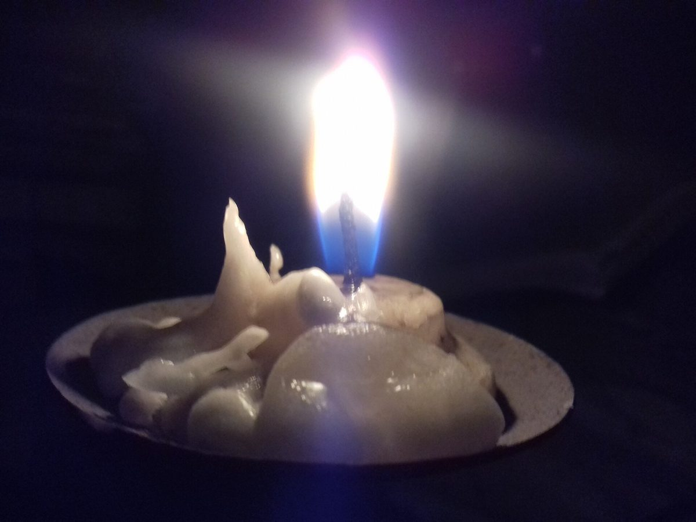
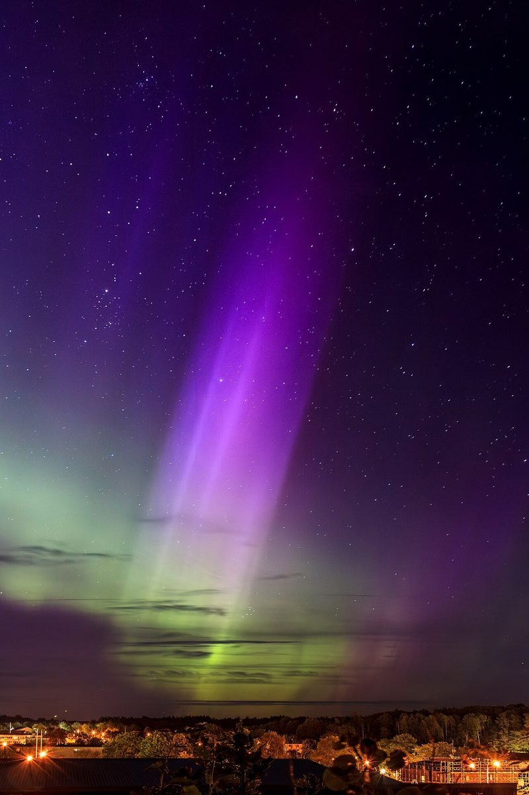
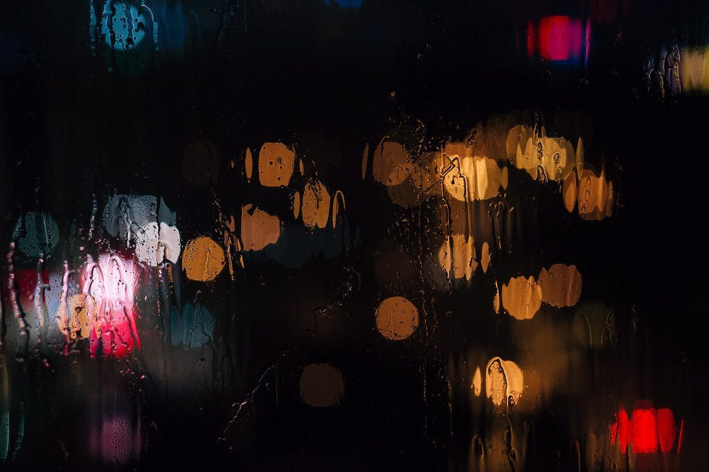

Cafe / 京都府宮津市波路町
Fıka Mawata
京都府宮津市波路町にあるカフェ「Fika Mawata」のご案内ページです。営業時間やメニューなど、詳しいことは準備中。まずはInstagramをのぞいてみてください。
制作側の連想
ろうそくの丈くらべ
この試作ページのテーマは、屋号の綴り「Fika」から北欧の言葉を連想し、そこから灯りを思い浮かべた、制作側の連想です。お店の理念・由来とは無関係です。5ページを5本のろうそくに見立て、背の高さを変えて並べています。
灯りのイメージ
空と明かりの写真四枚
写真はお店のものではありません。国外または撮影地不明のフリー素材で、テーマのイメージとして選びました。




ご案内
お店のこと(確認できたものだけ)
| 所在地 | 〒626-0064 京都府宮津市波路町２３４８ |
|---|---|
| 電話 | 090-9095-4870 |
| 営業時間 | 準備中 |
| 定休日 | 準備中 |
| ご予約 | 準備中 |
| 駐車場 | 準備中 |
| SNS | Instagram @mawata3935 |